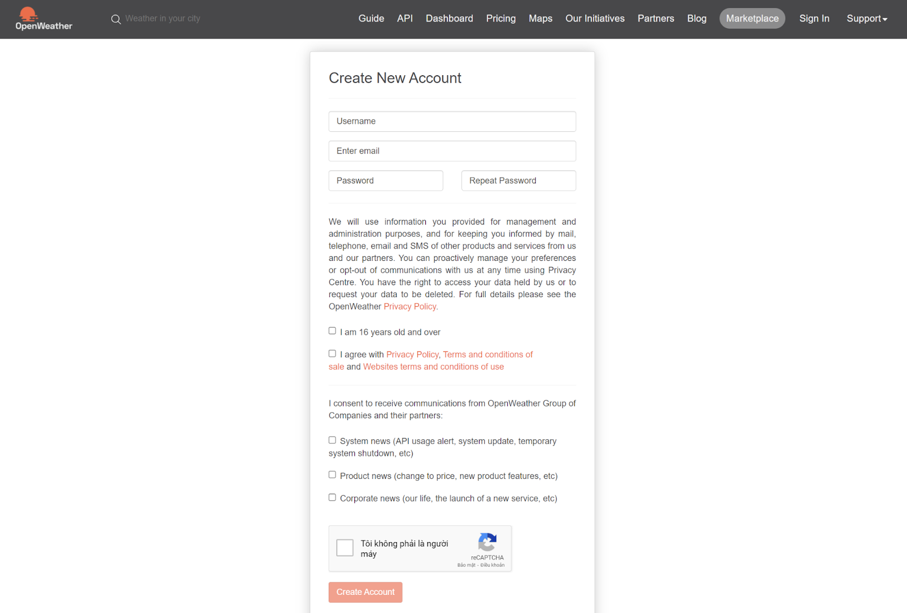
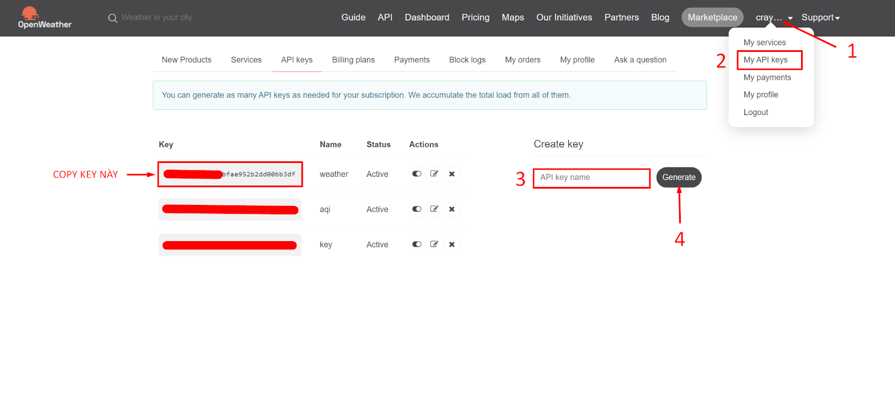
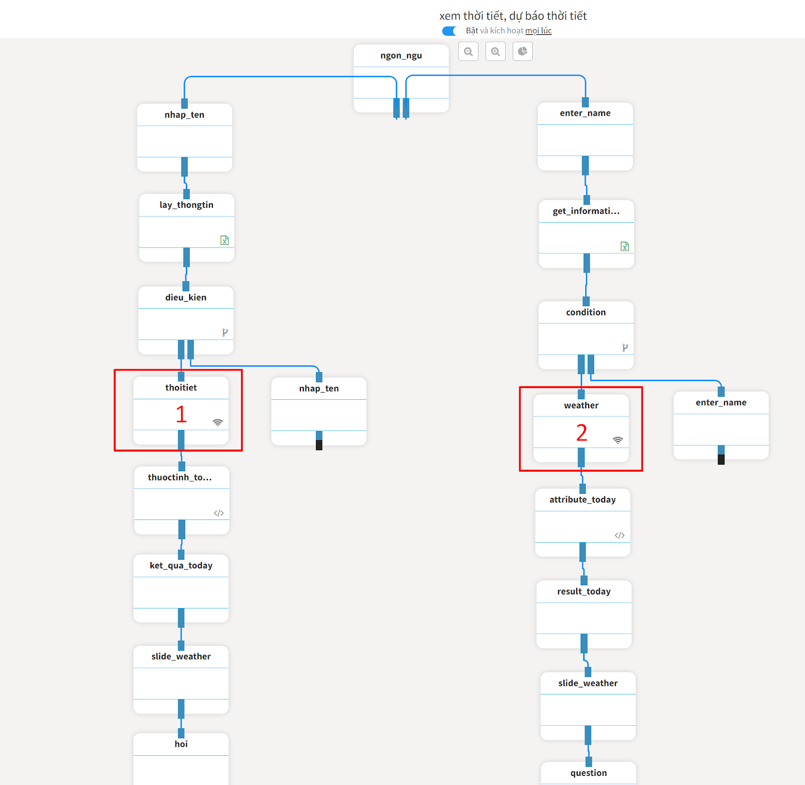
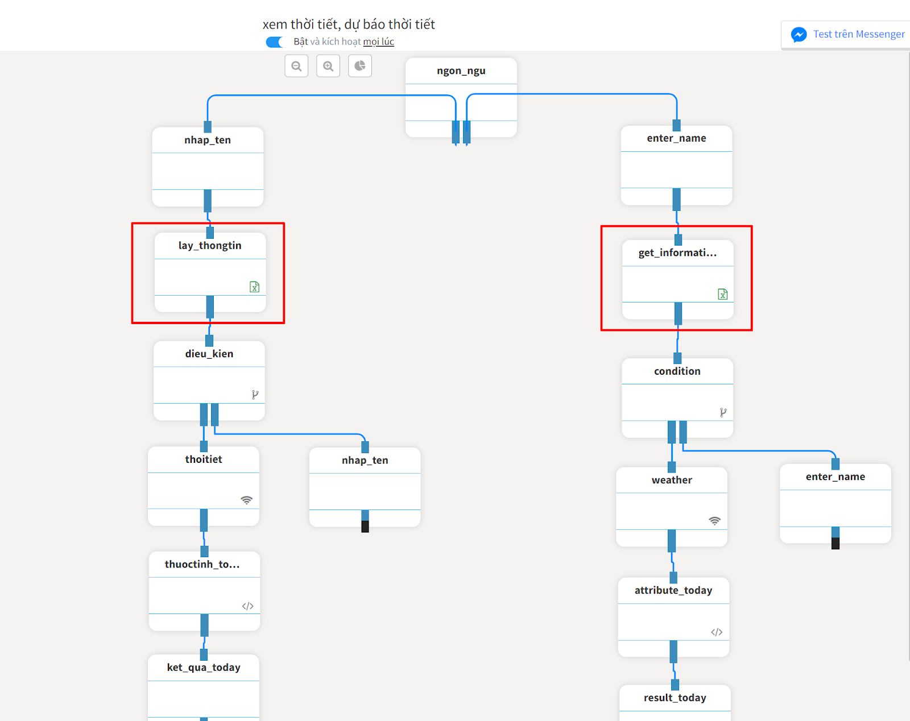
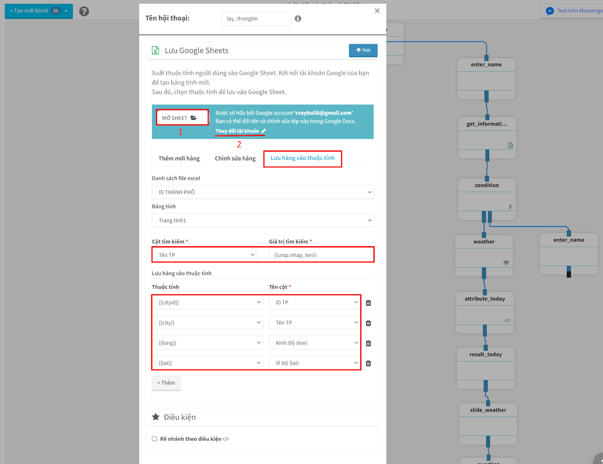
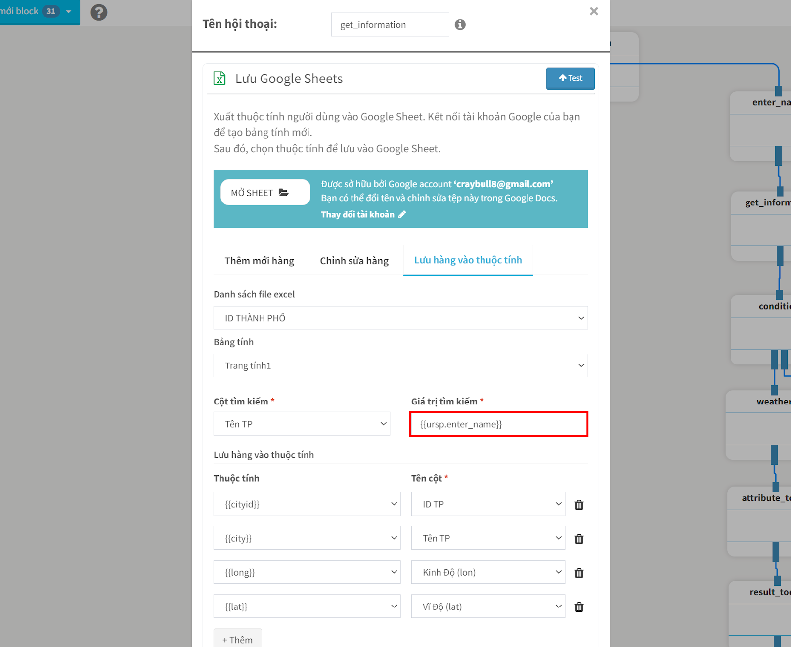
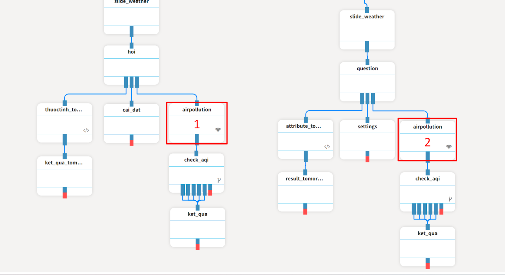

Hướng dẫn tạo chatbot dự báo thời tiết
DEMO: https://m.me/ahachatdemo?ref=weather
Copy link kịch bản mẫu tại: https://ahachat.com/share-story-to-bot/4b64029286fbdf233e4416308d008fd5BtqZjArKuW2101221
Ở kịch bản này chúng ta sẽ sử dụng dữ liệu của trang: https://openweathermap.org
Openweather cung cấp API miễn phí với 60 lần gọi/phút khi đăng ký tài khoản.
Bước 1: Đăng ký tài khoản và tạo API Key
Truy cập vào https://home.openweathermap.org/users/sign_up để tạo tài khoản
Điền các thông tin và bấm Create Account

Sau khi tạo tài khoản và đăng nhập bạn nhấn vào tên tài khoản và chọn My API Keys
Ở ô Create key nhập tên API bất kỳ sao đó bấm Generate để tạo → Copy lại dãy Key

Bước 2: Chỉnh sửa kịch bản mẫu
2.1 Thay API Key Dự Báo Thời Tiết
Kịch bản có 2 nhánh cho ngôn ngữ Tiếng Việt và Tiếng Anh

Mở block 1 & 2 để thay API Key bạn đã tạo ở bước trên vào
Link API sẽ có dạng:
Trong đó:
- {{cityid}}: ID của thành phố
- {{lang}}: Ngôn ngữ hiển thị
- {{donvi}}: Đơn vị nhiệt độ C hoặc F
- {{key}}: Là API Key cần nhập (bạn chỉ cần thay ở đây)
2.2 Sửa thông tin block sheet
Tiếp tục chỉnh sửa thông tin ở 2 block sheet này

- Chọn mở sheet để lấy thông tin ID, tên các địa danh và copy về sheet của bạn
Có thể mở tại đây: https://docs.google.com/spreadsheets/d/145y36QBnOGhGBJjSKaDIx62_GCIZ_ZmTJQLftvdgVUc/edit?usp=sharing
- Tham khảo data này để bổ sung thêm các ID còn thiếu: city.list.json - Google Drive

- Chọn Thay đổi tài khoản để chuyển sang tài khoản Google của bạn
Chọn tab Lưu hàng vào thuộc tính và nhập các ô thông tin sau:
- Cột tìm kiếm: Chọn Tên TP
- Cột Giá trị tìm kiếm: Nhập {{ursp.nhap_ten}}
- Cột Thuộc tính nhập các giá trị tương đương: {{cityid}} → ID TP, {{city}} → Tên TP, {{long}} → Kinh Độ, {{lat}} → Vĩ Độ

Với Block get_information thì Giá trị tìm kiếm là : {{ursp.enter_name}}
2.3 Thay API Key Xem Mức Độ Ô Nhiễm Không Khí
Tiếp tục thay API key ở 2 block airpollution bạn đã tạo ở bước trên vào
Link API sẽ có dạng:
GET: http://api.openweathermap.org/data/2.5/air_pollution?lat={{lat}}&lon={{long}}&appid={{key}}
Trong đó:
- {{lat}}: Vĩ Độ
- {{long}}: Kinh Độ
- {{key}}: Là API Key cần nhập (bạn chỉ cần thay ở đây)

Vậy là đã xong HD chỉnh sửa kịch bản dự báo thời tiết, chúc bạn áp dụng thành công.